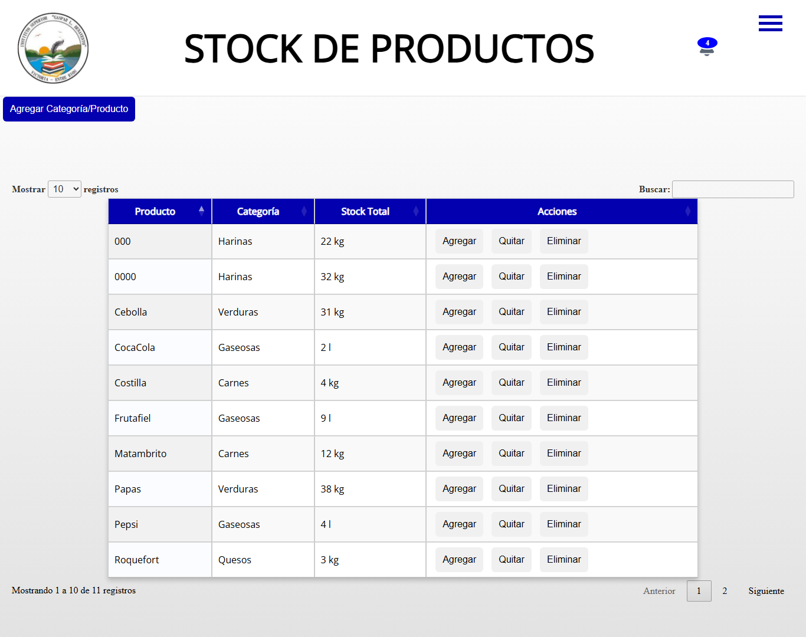
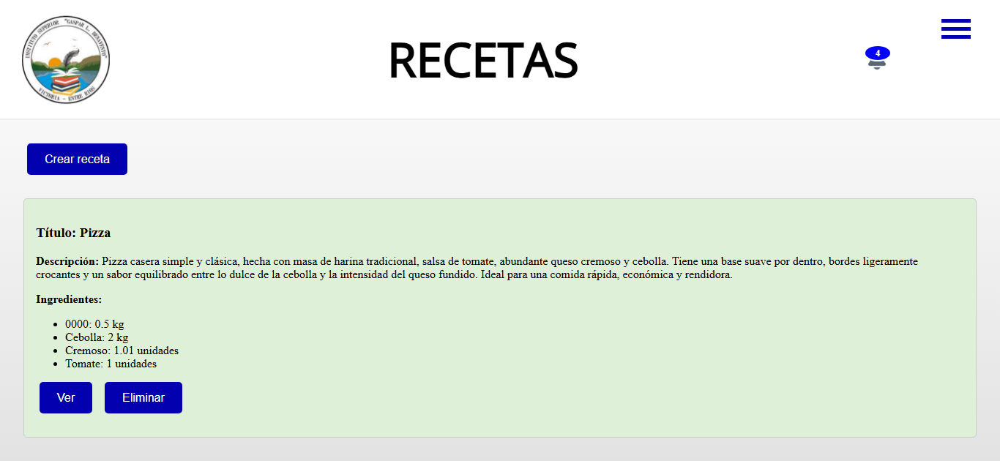
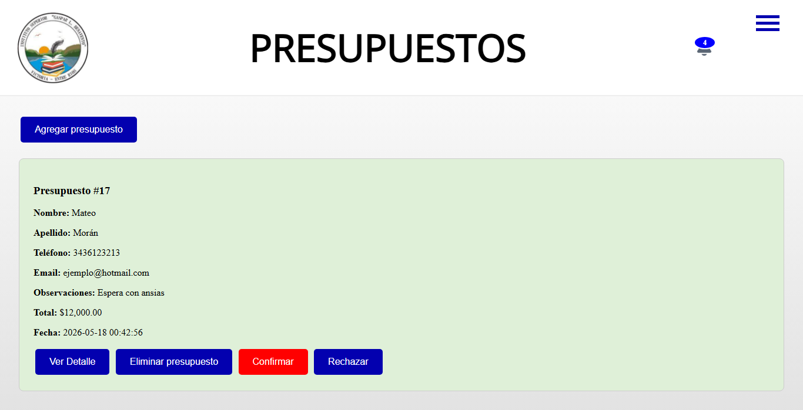
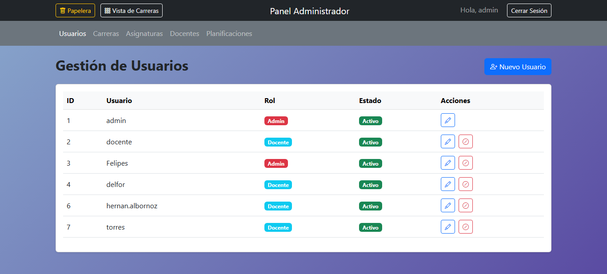
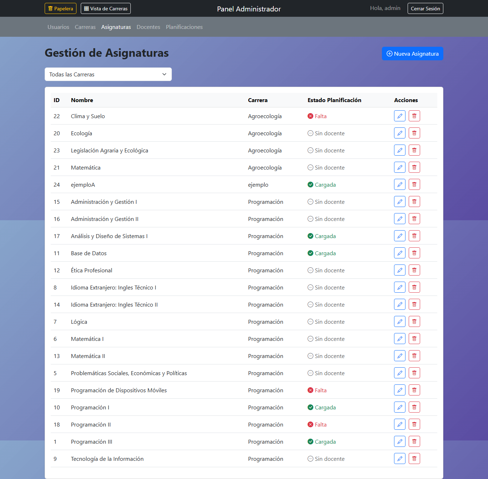
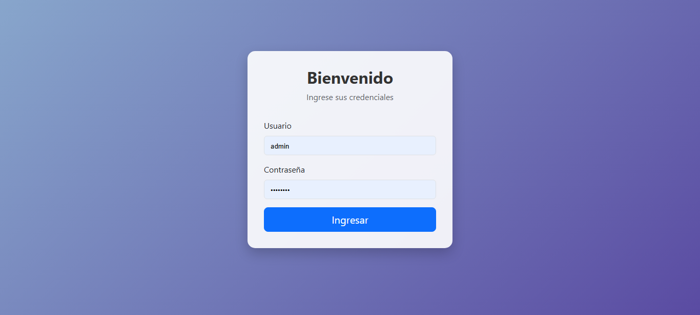
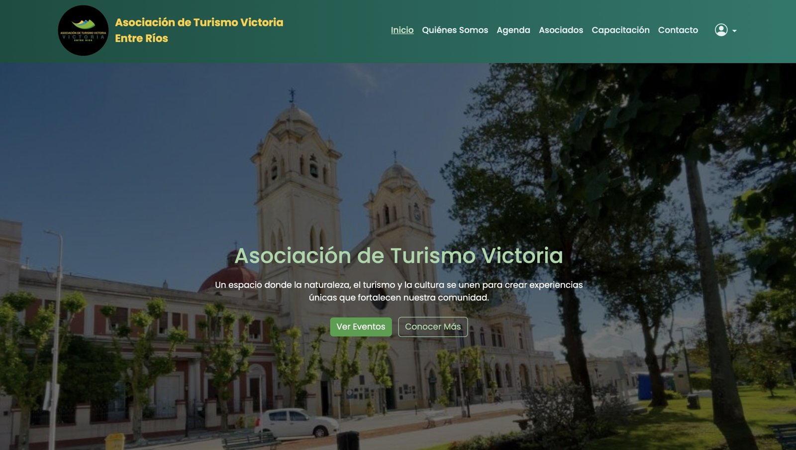
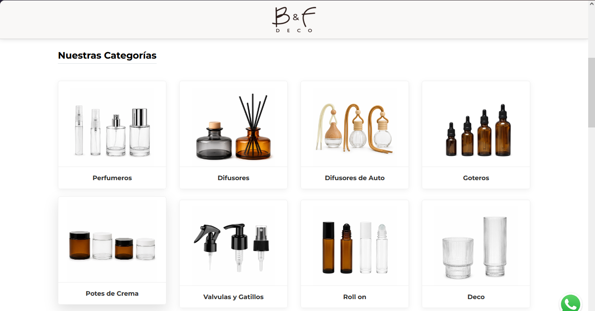
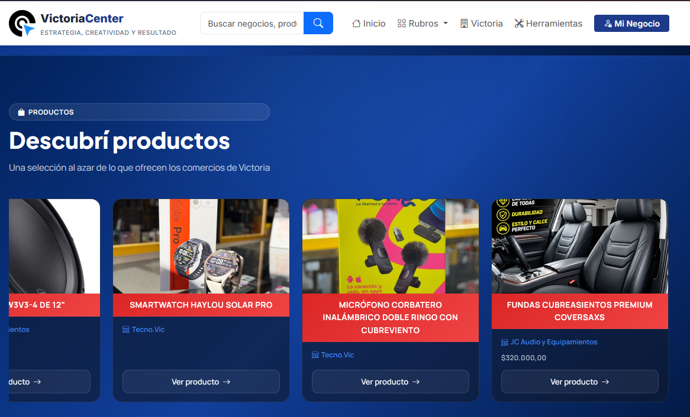
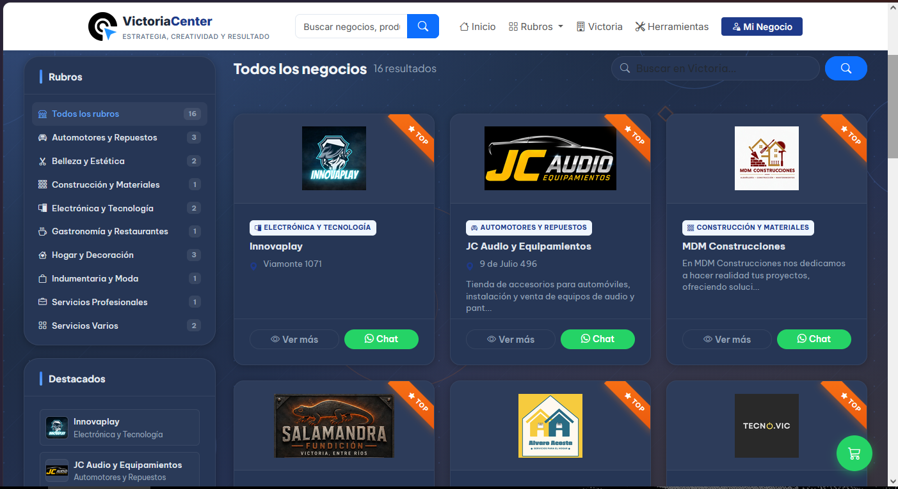

Desarrollador Web Junior · 1bit
Desarrollo y mantenimiento de sitios web dinámicos sobre el ERP GlobalBluePoint. Nuevas páginas y funcionalidades frontend, corrección de errores, componentes Vue.js yconsultas SQL en catálogos y landing pages.
Técnico Superior en Desarrollo de Software.
Desarrollo soluciones tecnológicas utilizando distintos lenguajes y herramientas, con experiencia en aplicaciones web, sistemas de gestión, bases de datos y resolución de problemas.
Sistema de gestión integral para entornos gastronómicos que permite administrar inventarios, recetas y presupuestos desde una misma plataforma. Incorpora control automatizado de stock, descontando los insumos utilizados al ejecutar presupuestos y generando alertas cuando los productos alcanzan niveles bajos de existencias.



Sistema de gestión académica con acceso por usuario y roles, diseñado para administrar planificaciones docentes. Cuenta con un panel centralizado para gestionar carreras, asignaturas y docentes, además de herramientas de recuperación de registros eliminados y generación de reportes en PDF.



Desarrollo de un sitio web institucional para la Asociación de Turismo de Victoria Entre Ríos. Incluye secciones informativas, formularios y un panel administrativo para gestionar contenidos. Cuenta con diseño responsive y fue desplegado en un hosting real, incluyendo la configuración y gestión de archivos mediante FTP.

Desarrollo y personalización de una página del sitio mayorista de BYF Deco durante mi experiencia como Desarrollador Web Junior en 1bit. Trabajé con GlobalBluePoint para implementar y adaptar componentes, realizar ajustes visuales y aplicar modificaciones en otras secciones del sitio.

Desarrollo colaborativo de una plataforma comercial que conecta negocios y consumidores de Victoria, Entre Ríos. Participé en el desarrollo de distintos módulos, principalmente con PHP y CSS, colaborando también con JavaScript y MySQL. Implementé funcionalidades de contacto directo por WhatsApp y trabajé en carruseles interactivos, desarrollando sus animaciones y navegación mediante arrastre. También participé en la publicación y gestión del sitio en producción mediante FTP.

